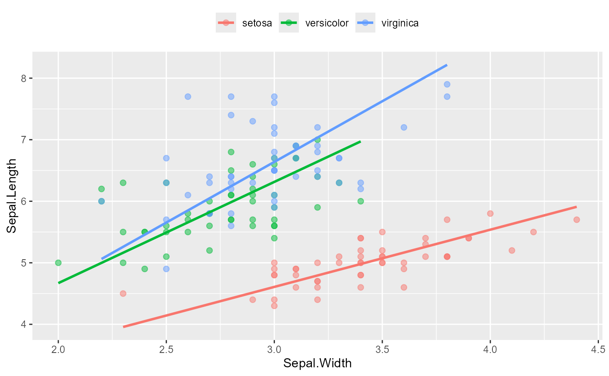
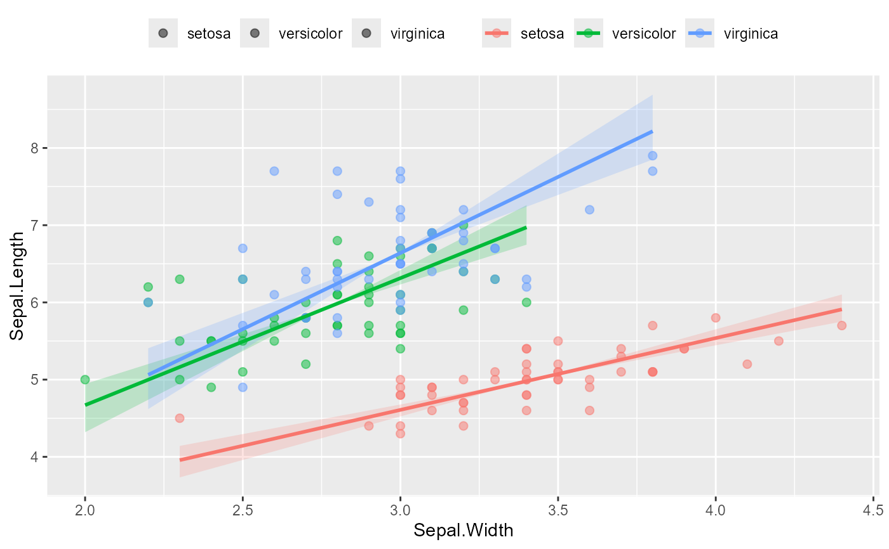

Create a scatter plot based on the coefficients from (Standardised) Major Axis Estimation fit.
Arguments
- data
a dataframe.
- groups
group variable.
- xvar
x variable for drawing.
- yvar
y variable for drawing.
- sma.fit
an sma or ma object fitted in SMATR package.
- ci
logical. If TRUE, add a parametric confidence ribbon for the SMA slope, using the slope confidence intervals stored in
sma.fit(set the level withsma(..., alpha = )). Given that SMA lines pass through the group centroid, the ribbon is a slope-CI envelope pivoted at each group mean, and it is not related with the OLS band ofgeom_smooth(). Default is FALSE.- ci.alpha
Alpha transparency passed to
ggplot2::geom_ribbon(). Default is 0.2.- n
Number of x values at which the confidence ribbon is evaluated in each group. Default is 100.
Examples
datafile <- system.file("iris.csv", package = "ggsmatr")
df.iris <- read.csv(datafile, encoding = "UTF-8")
library(ggsmatr)
library(ggplot2)
library(smatr)
#> Warning: package 'smatr' was built under R version 4.6.1
fit <- sma(Sepal.Length ~ Sepal.Width + Species,
data = df.iris, shift = TRUE, elev.test = TRUE, alpha = 0.05)
ggsmatr(data = df.iris, groups = "Species",
xvar = "Sepal.Width", yvar = "Sepal.Length",
sma.fit = fit) +
theme(legend.position = "top", legend.title = element_blank()) +
ylab("Sepal.Length") +
xlab("Sepal.Width")
#> group r2 pval
#> 1 setosa 0.551 0.000
#> 2 versicolor 0.277 0.000
#> 3 virginica 0.209 0.001
#> Warning: Using `size` aesthetic for lines was deprecated in ggplot2 3.4.0.
#> ℹ Please use `linewidth` instead.
#> ℹ The deprecated feature was likely used in the ggsmatr package.
#> Please report the issue at
#> <https://github.com/mariosandovalmx/ggsmatr/issues>.

# parametric slope-CI ribbon, using the intervals already stored in the sma fit
ggsmatr(data = df.iris, groups = "Species",
xvar = "Sepal.Width", yvar = "Sepal.Length",
sma.fit = fit, ci = TRUE) +
theme(legend.position = "top", legend.title = element_blank()) +
ylab("Sepal.Length") +
xlab("Sepal.Width")
#> group r2 pval Slope Slope_lowCI Slope_highCI
#> 1 setosa 0.551 0.000 0.930 0.767 1.128
#> 2 versicolor 0.277 0.000 1.645 1.288 2.100
#> 3 virginica 0.209 0.001 1.972 1.527 2.545
